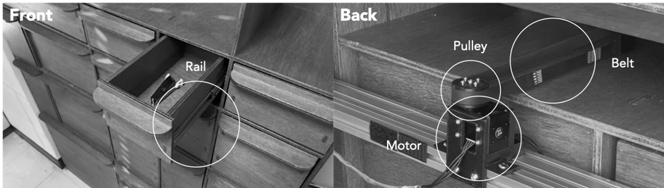

This study investigated whether people prefer to interact with a robot that assists them based on its own judgment (proactive) or one that follows direct verbal commands (reactive). We designed an experiment with a "robotized" drawer unit that could either open a drawer automatically after hearing a task-related sound (like a user organizing papers) or open it after receiving a specific voice command (e.g., "Find me a stapler"). The results showed that users consistently rated the robot that followed verbal commands as more useful, intelligent, and appropriate for the task. This suggests that, even in everyday situations, people prefer to maintain control over a robot to ensure their intentions are understood correctly.
